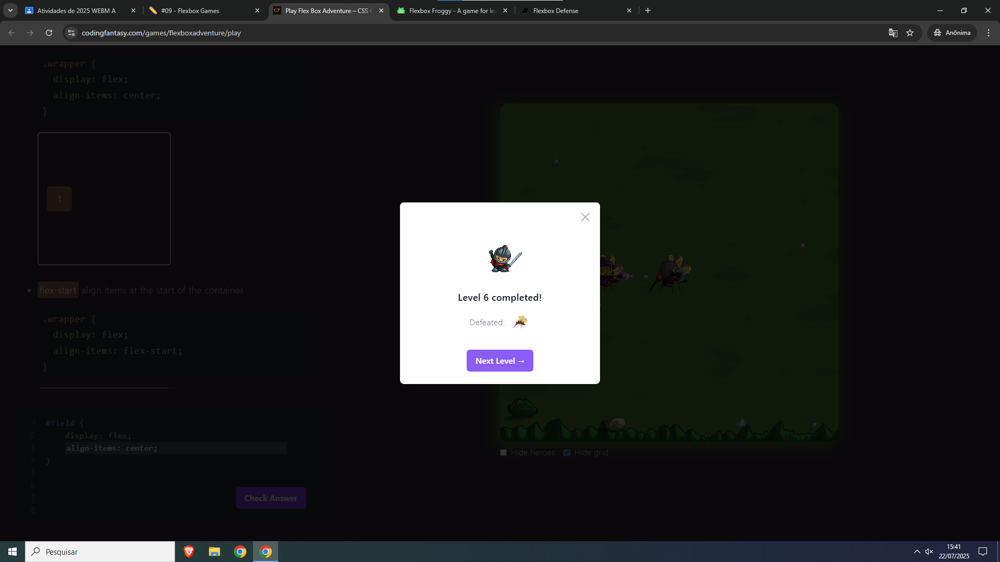
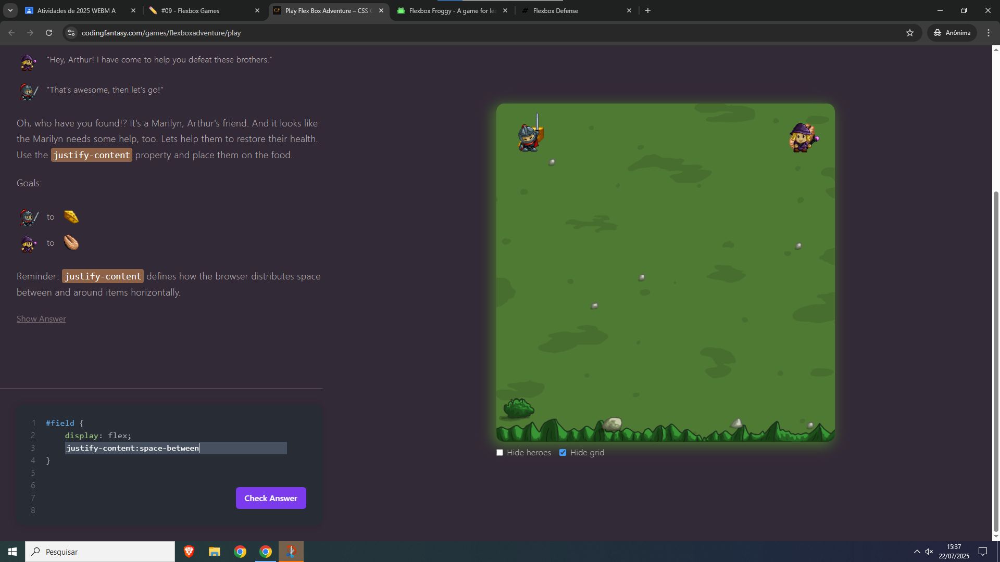
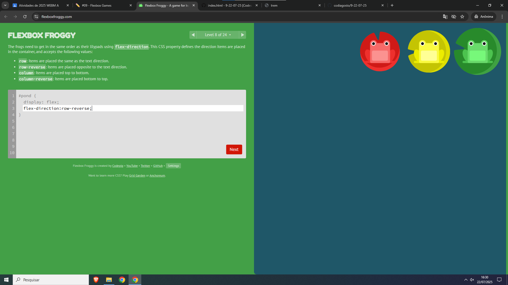

Iago Ornelas de Souza
Eu escolhi esses dois pois pareceram interessantes ao entrar jogar com os align_items e justify-content
1
2
3

sobre a 1 a dificuldade foi lembrar o nome center pois sao palavra que nao sao comun do portugues do dia a dia
sobre a 2 eu confundi do space-around com o space-between
ja o 3 eu numca tinha visto a palavra evenly ai fugiu completamente da cabeça
1

2

3
Sobre o 1 ter que usar 2 negocios e lebrar que o reverse faz ficar o contrario levou uns belos 5 segundos
o 2 eu estava colocando o around ao invex do between ja tinha desitisdo dela e dps voltei e fix direito
sobre o 3 o reverse é complicado
em um menu usaria display: flex para organizar as imagens em uma linha. Com flex-wrap: wrap, as imagens que não cabem na linha atual quebram para a próxima linha. Usaria justify-content: space-between para garantir que o espaço entre as imagens seja uniforme. Poderia usar align-items: center para garantir que todas as imagens fiquem alinhadas verticalmente no centro.